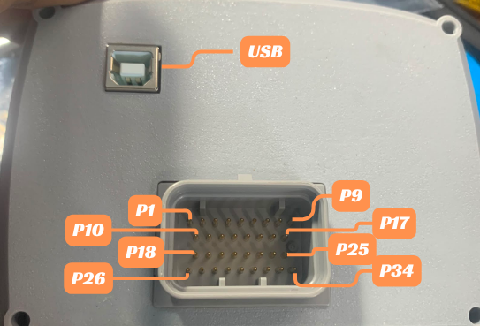

Last updated: November 24, 2026
Mazduino X600¶
Overview¶
The Mazduino X600 is an ECU with an integrated 4.3 inch display: dash and ECU in one unit, so no separate dash display is needed to monitor engine data in real time. It runs rusEFI-based firmware and is configured and tuned with TunerStudio.
It connects to a computer over USB Type B, and to the engine harness through a 34-pin connector. With 6 ignition outputs, 12 low side outputs, a combination of Hall (Digital) and VR inputs, and analog inputs for voltage and temperature sensors, the X600 supports engines with up to 6 cylinders.
This documentation is based on the Mazduino X600 product specification and the hardware pinout reference in the X600 manual.
Key Features¶
- Integrated 4.3 inch display: dash and ECU in one unit, showing RPM, sensor data and engine status in real time (display-only; all tuning is done in TunerStudio)
- rusEFI based firmware
- Connects to a computer via USB Type B for tuning with TunerStudio
- 34-pin connector for wiring to the engine harness
- 6x ignition outputs (IGN1–IGN6; IGN5/IGN6 share their lines with High Side 1/2)
- 2x High Side outputs (HS1, HS2) for 12V switched loads (via the jumper option on IGN5/IGN6)
- 12x low side outputs (LS1–LS12) for injectors, idle PWM, boost, VVT, relays and other actuators
- 4x Analog Volt inputs (AV1–AV4) for MAP, TPS, O2/wideband, PPS or pressure sensors (0–5V)
- 4x Analog Temp inputs (AT1, AT2, AT3, AT6) for CLT, IAT and other temperature sensors
- 2x Digital/Hall inputs (Digital 1, Digital 2) for CKP/CMP, VSS or switches
- 2x VR inputs (VR1, VR2) for variable reluctor CKP/CMP sensors (sharing lines with Digital/Analog Temp via a jumper option)
- TACH output for the RPM signal to a tachometer
- Built-in 5V sensor supply as the reference for 5V sensors
Wiring and Installation¶
The X600 uses the 34-pin connector for all connections to the engine harness, and a separate USB Type B port for the tuning connection to a computer.

Pin positions on the 34-pin connector and the USB Type B port.
34-pin Connector Layout¶
P1 P2 P3 P4 P5 P6 P7 P8 P9
P10 P11 P12 P13 P14 P15 P16 P17
P18 P19 P20 P21 P22 P23 P24 P25
P26 P27 P28 P29 P30 P31 P32 P33 P34
34-pin Connector Pin Assignment¶
| Pin | Function | Description |
|---|---|---|
| P1 | 12V | 12V ECU power supply |
| P2 | IGN6 / HS2 | Ignition 6 or High Side 2 (12V switching), jumper option |
| P3 | IGN5 / HS1 | Ignition 5 or High Side 1 (12V switching), jumper option |
| P4 | IGN2 | Ignition 2 |
| P5 | TACH | Tacho signal output (RPM) |
| P6 | AT6 / VR1- | Analog Temp 6 or VR1- (VR1 negative input), jumper option |
| P7 | AT3 / VR2- | Analog Temp 3 or VR2- (VR2 negative input), jumper option |
| P8 | AT2 | Analog Temp 2 |
| P9 | AT1 | Analog Temp 1 |
| P10 | GND | Power ground (ECU power ground) |
| P11 | IGN4 | Ignition 4 |
| P12 | IGN3 | Ignition 3 |
| P13 | IGN1 | Ignition 1 |
| P14 | AV1 | Analog Volt 1 (0–5V input) |
| P15 | AV2 | Analog Volt 2 (0–5V input) |
| P16 | AV3 | Analog Volt 3 (0–5V input) |
| P17 | AV4 | Analog Volt 4 (0–5V input) |
| P18 | LS2 | Low Side 2 |
| P19 | LS1 | Low Side 1 |
| P20 | DIGITAL1 / VR1+ | Digital 1 (Hall) or VR1+ (VR1 positive input), jumper option |
| P21 | DIGITAL2 / VR2+ | Digital 2 (Hall) or VR2+ (VR2 positive input), jumper option |
| P22 | GND | Sensor ground |
| P23 | GND | Sensor ground |
| P24 | 5V SENSOR | 5V sensor supply |
| P25 | LS12 | Low Side 12 |
| P26 | LS4 | Low Side 4 |
| P27 | LS3 | Low Side 3 |
| P28 | LS6 | Low Side 6 |
| P29 | LS5 | Low Side 5 |
| P30 | LS8 | Low Side 8 |
| P31 | LS7 | Low Side 7 |
| P32 | LS9 | Low Side 9 |
| P33 | LS10 | Low Side 10 |
| P34 | LS11 | Low Side 11 |
Shared Lines (Jumper Option)¶
Some pins have two functions, selected with a jumper. The jumper configuration can be specified when you first order (chosen to suit your engine) or changed yourself by setting the jumpers on the board. Always switch off ECU power before changing the jumper configuration.
- P2 (IGN6 / HS2) and P3 (IGN5 / HS1): can be configured as ignition outputs (IGN5/IGN6) or as High Side outputs (HS1/HS2) for 12V switched loads, for example alternator control or a 12V solenoid.
- P6 (AT6 / VR1-) and P20 (DIGITAL1 / VR1+): the line pair for VR1. Select VR (VR1+ and VR1-) for a variable reluctor CKP/CMP sensor, or Analog Temp 6 + Digital 1 (Hall) for Hall/temperature sensors.
- P7 (AT3 / VR2-) and P21 (DIGITAL2 / VR2+): the line pair for VR2, configured the same way as VR1.
Note: The functions of the pins above are set by the jumper positions. Make sure the jumper configuration matches your wiring and the type of sensor/actuator used. If in doubt, specify the configuration when ordering.
I/O Count Summary¶
| Group | Count | Description |
|---|---|---|
| Ignition Output | 6 | IGN1–IGN6 (IGN5/IGN6 share lines with HS1/HS2) |
| High Side | 2 | HS1, HS2 for 12V switching (via the IGN5/IGN6 lines) |
| Low Side | 12 | LS1–LS12 for injectors and actuators |
| Analog Volt Input | 4 | AV1–AV4 (0–5V) |
| Analog Temp Input | 4 | AT1, AT2, AT3, AT6 |
| Digital/Hall Input | 2 | Digital 1, Digital 2 (share lines with VR+) |
| VR Input | 2 | VR1 (+/-), VR2 (+/-) |
| Tacho Output | 1 | TACH |
| 5V Sensor Supply | 1 | 5V sensor reference |
Firmware Function Mapping¶
Below is a typical function mapping for the firmware setup. The assignments can be adjusted to suit the engine and the tuning strategy.
| Typical Function | Default Line |
|---|---|
| Ignition 1–6 | IGN1 to IGN6 |
| Injector | Low Side (LS1 onward) |
| Main Relay / Fuel Pump / Fan / AC / Idle | Low Side (LS lines not used for injectors) |
| MAP / TPS / O2 / PPS / Pressure sensor | Analog Volt 1–4 |
| CLT / IAT / Additional temp | Analog Temp (AT1, AT2, AT3, AT6) |
| CKP / CMP Hall | Digital 1 and Digital 2 |
| CKP / CMP VR | VR1 and VR2 (via shared lines) |
| Tacho | TACH |
Example I/O Usage Scenarios¶
The Low Side, Analog Volt and Analog Temp lines are generic, so how they are allocated depends on the engine configuration. Some example scenarios:
- 6-cylinder full sequential engine: use IGN1–IGN6 for COP/individual ignition, and 6 Low Side lines for sequential injectors. The remaining Low Side lines (LS7–LS12) are free for idle PWM, boost solenoid, VVT, fuel pump, fan or other actuators.
- 4-cylinder engine: use 4 ignition channels and 4 Low Side lines for injectors, and the rest for actuators and relays. The IGN5/IGN6 lines can be switched to High Side (HS1/HS2) for 12V switching.
- VR trigger: for variable reluctor CKP/CMP sensors, use the VR1 (P6 + P20) and VR2 (P7 + P21) lines.
- Hall trigger: for Hall CKP/CMP sensors, use Digital 1 (P20) and Digital 2 (P21).
- Analog Volt: inputs for 0–5V analog sensors such as MAP, TPS, O2/wideband, PPS or pressure sensors.
- Analog Temp: inputs for temperature sensors such as CLT (Coolant Temp) and IAT (Intake Air Temp).
Integrated 4.3 inch Display¶
The X600 has a 4.3 inch display built into the ECU that shows engine data in real time (RPM, sensor data and status), so no separate dash display is needed. The display is display-only: all configuration and tuning is done in TunerStudio, not through on-screen menus.
Tuning Software¶
The X600 is configured and tuned with TunerStudio over a USB Type B connection to a computer.
- Connect the X600 to the computer with a USB Type B cable.
- Open TunerStudio, select the matching port, then connect to the ECU.
- Use the configuration file (firmware/definition) made for the Mazduino X600 so that every pin works as the board was designed.
- Check the outputs with test mode in TunerStudio before starting the engine.
Quick Installation Guide¶
- Make sure the power ground (P10) and sensor ground (P22, P23) are properly connected.
- Connect P1 to a stable 12V ECU supply.
- Choose Hall (Digital) or VR trigger mode to match the CKP/CMP sensor type, then wire it to the matching shared lines.
- Decide whether the IGN5/IGN6 lines are used as ignition or High Side, as needed.
- Connect 5V sensors to the 5V Sensor Supply line (P24) and the temperature/voltage sensors to the matching Analog lines.
- Connect the X600 to the computer via USB Type B and verify the outputs with test mode in TunerStudio before starting the engine.
Important Notes¶
- The 4.3 inch display is display-only; all tuning is done in TunerStudio.
- The ignition outputs are meant for smart coils. Dumb coils require an external driver/IGBT.
- HS1 and HS2 (the IGN5/IGN6 lines) can be used as 12V switching outputs, for example for alternator control.
- The VR lines (VR1/VR2) share pins with Digital and Analog Temp: make sure only one function is wired per pin pair.
- The firmware for this board is based on rusEFI. Use the X600-specific definition/firmware.
References¶
- Mazduino website - https://www.mazduino.com/
- Mazduino Wiki - https://wiki.mazduino.com/
- Download TunerStudio - https://www.tunerstudio.com/index.php/downloads
- rusEFI firmware reference - https://wiki.rusefi.com